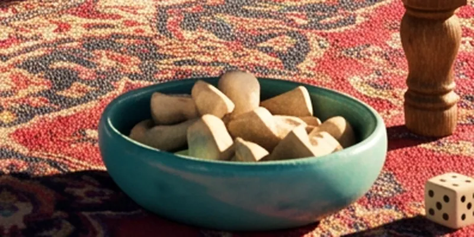

असिक, खेल की हड्डी
भेड़ की टखने की हड्डी — मानवता का सबसे पुराना “पासा” और स्टेपी का प्रिय खेल।

असिक भेड़ या बकरी के पैर की टखने की हड्डी (एस्ट्रागलस) है। उसके चार पहलू हैं जिन पर वह गिर सकती है, और स्टेपी में हर पहलू का अपना नाम है। ऐसी हड्डियाँ खुदाई में लगभग ईसा-पूर्व पाँचवीं सहस्राब्दी से मिलती हैं, और दूसरी हड्डियों से कहीं ज़्यादा: उनसे खेला जाता था, शकुन देखे जाते थे, बच्चों को दी जाती थीं।
हर जाति के अपने नाम हैं: कज़ाख़ों में असिक, किर्गिज़ों में चूको, मंगोलों में शगाई, उज़्बेकों में ओशिक, ताजिकों में बुजुलबोज़ी। प्राचीन यूनान और रोम में वही हड्डी पासे की तरह फेंकी जाती थी; चौड़े पहलू सौ में लगभग 38 बार पड़ते हैं, सँकरे 12 बार।
असिक अतु
सबसे प्रसिद्ध स्टेपी खेल असिक अतु है, “असिकों पर निशाना”। असिक कोन पर कतार में रखे जाते हैं, और खिलाड़ी बारी-बारी से भारी साका से उन पर मारते हैं; साका अक्सर रंगा या सीसा भरा होता है। रेखा से बाहर निकले असिक निशानेबाज़ ले लेता है और फिर मारता है। खेल आँख का अंदाज़ा और शांत हाथ सिखाता है; इसे बच्चे और बड़े दोनों खेलते हैं, त्योहारों पर पूरे टूर्नामेंट होते हैं।
2017 में कज़ाख़ असिक खेल यूनेस्को की अमूर्त सांस्कृतिक विरासत सूची में शामिल हुए; मंगोल शगाई निशानेबाज़ी 2014 में। हमारा संस्करण सरल है: दस असिक, एक घेरा और साका, धूल भरे मैदान की जगह भौतिकी।
स्रोत
- Wikipedia: Knucklebones
- UNESCO: Kazakh traditional Assyk games (2017)
- UNESCO: Mongolian knuckle-bone shooting (2014)
- L. E. Maistrov, Probability Theory: A Historical Sketch (Academic Press, 1967)